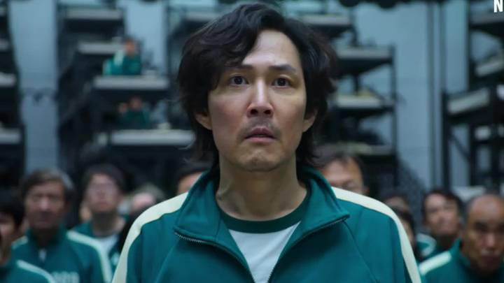
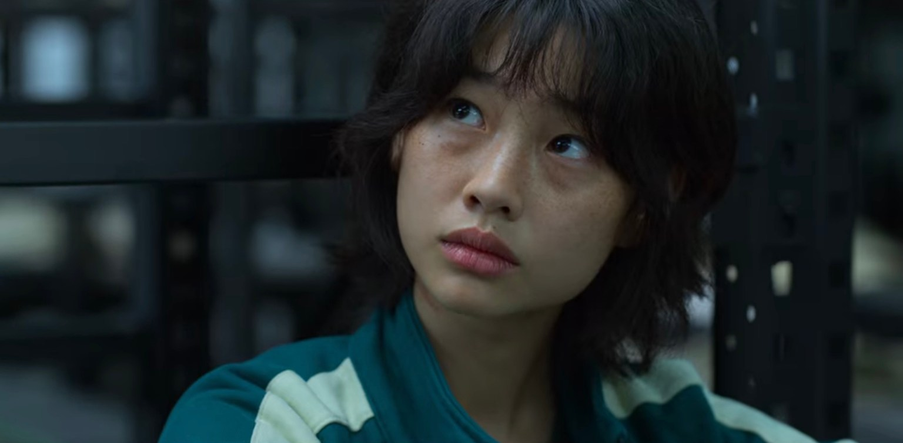
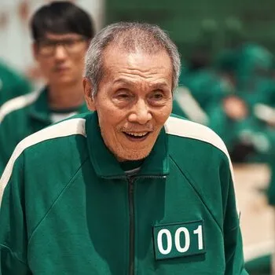
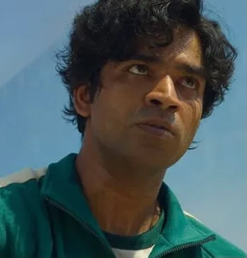
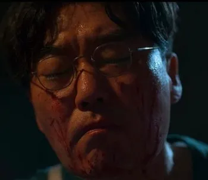
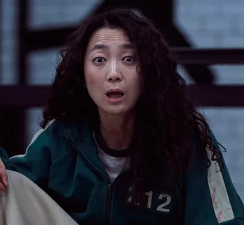

| Players |
Details |
Pictures |
| PLAYER 456 |
Gi-hun is millions of won in debt, and if he fails to pay up, the mobsters will take one of his kidneys. His ex-wife is disgusted with him, and he fears that if she takes their daughter to Los Angeles, the young girl will forget her Korean heritage and start referring to another man — his ex-wife's new husband — as her father. Additionally, his mother is in very poor health and is in need of surgery due to her diabetes. He actually comes pretty close to dying multiple times but survived thanks to sheer dumb luck.
He almost falls after he slips on someone's body in the first game and would've been killed if Ali didn't save him.
He picks the honeycomb with the most difficult shape in the second game but figures out how to remove the shape easier by licking it just before the time runs out.
He ends up with the weakest team in the third game's tug-of-war and only survives thanks to Il-nam and Sang-woo's good strategies.Before the fifth game begins, he was left with two numbered vests to pick: the first and the last numbers. Another contestant begged him for the first vest instead, so he was left with the last vest - which actually turned out to be the best position to be in. If he had picked the first position, he would have most likely died in the glass bridge crossing, while the only disadvantage of being last to go was not having enough time remaining to finish the cross, which he made it Just in Time.
Finally, while he wins the fight with Sang-woo fair and square in the sixth game, he refuses to finish the game and win the prize money. Sang-woo decides to kill himself instead to let Gi-hun be the sole winner and win the ultimate prize. |

|
| PLAYER 067 |
She's probably one of the most combat-capable in the main cast, which helps in the nighttime brawl. She's also smart enough to not inhale the gas when she re-enters the games, which allows her to pick-pocket a knife from one of the guards while she pretends to be unconcious.The reason she's going through the games is to help her little brother who has to stay in an orphanage while she tries to get money to bring the rest of their family to South Korea.She is drawn to Ji-yeong, another Emotionless Girl, after spotting her sitting alone, away from the crowd during the third game.Player 067 of the most troubled out of the all the major characters. She grew up in North Korea before defecting, and has been living a criminal life in South Korea to make enough money to bring the rest of her family over.With Gi-hun, who had nothing but contempt for her early on due to the fact she pickpocketed him. But after the marbles game, she starts to be more empathetic towards him, even helping him out during the glass bridge game where she reminds him what panels to step on.She's a very efficient pick-pocket. Her first introduction shows her running into Gi-hun who's attempting to escape from loan sharks and she falls to the floor. However, when Gi-hun checks his coat for the money he just won from the races, his pocket has been slashed. She does this to the man who she's paying to help bring the rest of her family over after he makes it clear he's just milking her for money. She can be more stealthy as she easily takes a guards knife from their pocket while pretending to be unconscious. |

|
| PLAYER 218 |
A childhood friend of Gi-hun's who became a successful businessman, but is now wanted by the law for stealing from his clients.An extremely gifted student who became his town's golden boy after getting into Seoul National University and enjoying success in business. Thing is, he got rich mostly by embezzlement, and he is wanted by the law at the time he enters the games.
Cold Equation: His approach to the game. Whatever he needs to do to have a better shot at winning, he will do.Attempted in episode 2, he can be seen in the bathtub with a charcoal briquette burning in an enclosed space, a tragically common way for South Koreans to commit suicide by fume inhalation. He ultimately doesn't go through with it.Teaching Gi-hun the tactic to hide behind someone else in the first game establishes himself as Gi-hun's ally, but also that he is cunning and willing to put others in danger to protect himself.He's the cleverest player in Gi-hun's group of allies. His strategy helps their team win the tug-of-war. When picking partners for the fourth game, he immediately goes to Ali, reasoning that they can be a Brains and Brawn team and be well-prepared for whatever the challenge is.As the games go on and become more intense, his willingness to sacrifice other people to save his own life becomes apparent in the marble game, where he manipulates Ali into giving him all his marbles and sends him off on a wild goose chase with some "marbles" in his hand — which turn out to be useless old pebbles. Sang-woo arguably shows little remorse when Ali is shot dead for losing the game.
False Friend: He betrays all of his allies whenever he thinks there will be a benefit to doing so. Gi-hun doesn't catch on until the fifth game after he shoves the glassmaker to his death. |

|
| PLAYER 001 |
An elderly man dying of a brain tumor.He's an old, terminally ill man who doesn't seem to have a malicious bone in his body. That is, until it is revealed in Episode 9 that he created the games as a twisted form of amusement for himself and his rich friends.He turns out to be monstrously evil, but there's no indication that his friendly nature was an act. He even tells Gi-hun that he really did grow fond of him and enjoyed playing with him.What he seems to be at first, with his friendly and helpful attitude. While the friendly attitude seems to be genuine and his advices were genuinely useful, the "cool" part takes a much more sinister turn with the reveal of his true identity. During the first game of "Red Light, Green Light" while everyone else is cowering in fear for their lives, he's the only one smiling widely as he cheerfully continues on with the game and even getting a decent head start of the others. For most of the other games, he can be seen with a grin on his face as the others struggle to survive. It makes sense given his motivation for joining the games in the first place, to feel the joy of living again.After admitting to Gi-hun that he lied, he followed it up with the fact that his brain tumor is real, which explains why he's bedridden a year after the games.While it doesn’t excuse the massacre during the first game, he does point out that the players made the choice to come back to the games even when they knew they would die if they lost. |

|
| PLAYER 199 |
A Pakistani immigrant struggling to provide for his wife and infant.In the second episode, his crooked boss pushes him to the brink by, once again, refusing to pay him because business isn't going well. Once Ali discovers he actually has money, both men get into a fistfight that ends with the boss seriously injuring his hand on the machinery and Ali running away with the boss' cash.The strongest member of Gi-hun's group of allies.Although it's shown multiple times that he isn't the brightest crayon in the box, he makes up for that with his kindness and lack of malice. He's also respectful almost to a fault, insisting on calling the other men, especially Gi-hun and Sang-woo, "sir" even when they ask him to stop. He's a fast enough learner to beat Sang-woo, noted genius who has actually played the game growing up, at a game he's never played before. However, being a migrant worker in an unfamiliar country poses problems for him. Being naïve and kind to a fault also lead to his death. |

|
| PLAYER 240 |
A mysterious young woman who strikes up an unlikely bond with Sae-byeok.Fairly downplayed since she doesn't get very emotional, but it's clear that she hates the mention of religion and lashes out at the pastor for praying during the Tug-of-War game. You later come to find out that her father was a pastor who would pray after raping her.Emotionless girl Comparable to Sae-byeok in this regard, which is likely what draws them to each other.In Episode 5, Ji-yeong mocks a pastor who prays to God after the Tug-of-War game. It is then revealed next episode that her father was a pastor who killed her mother and raped her, only to then immediately pray for forgiveness as if that made it ok. Ji-yeong murdered her father for the former and ended up becoming one of the contestants after getting out of prison.She promised to Sae-byeok that she will help her win at any cost if she partners up with her in the fourth game... even if it costs her her life.During the Marbles game, she gets into a heart to heart talk with Kang Sae-Byeok and decides to give her a chance to live since Sae-Byeok has someone to live for. She dies smiling, thanking Sae-byeok for playing with her. |
|
| PLAYER 111 |
A doctor wanted for malpractice.He, along with a few other guards, are part of an organ-harvesting ring.After learning ahead of time what the game is by getting it slipped into his food, he swallows it.He becomes increasingly unhinged when the guards tell him they don’t have information on the next game. This leads to his death as he would not calm down and got himself and the guards who helped him executed by the Front Man when he catches them. |

|
| PLAYER 212 |
A manipulative fraudster who claims to be a poor single mother.Mi-nyeo initially serves as The Friend Nobody Likes and comic relief, until she was rejected by everyone in the fourth game. She has the last laugh, as she has never been in real danger of her life, and in the fifth game, she kills two people: an unnamed player, and Deok-su who had humiliated her earlier and was the main antagonist until that moment.She's understandably pissed at Deok-su's Chronic Backstabbing Disorder, and she ends up taking both herself and him down to their deaths, which gave the others a fighting chance to win the stepping stone game.She lies constantly in order to impress whoever she's looking to get in with. No one buys it.She tries to play up this role around Deok-su, but she's not particularly good at it.Obsequious, loud, a Compulsive Liar, prone to making unusual comments, and overall unpleasant. She also oversells her abilities to play the games, insisting repeatedly that she's "good at everything except the things I can't do." No wonder no one wants to team with her in the marble game though it's the best thing that could have happened to her at that point, as she gets to sit out the game for not having a partner.She somehow managed to sneak some cigarettes into the game, as she smokes a bit during her bathroom break and even slips Jang Deok-su her lighter during the honey-comb game.She's as unhinged and kooky as it gets. Probably the best case is her constantly screaming about her bowel movements as Sae-byeok crawls through the vents. She never stops talking, leading to the others trying to distance themselves from her as much as possible.She falls to her death with Deok-su in the fifth game. |

|